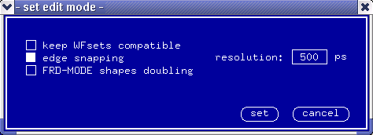

Setting Edge Snapping
The system provides you with edge snapping. This lets you set the resolution of:
- edges in the Timing Setup.
Note: This has nothing to do with edge resolution as seen by the DUT!
- the marker and cursor.
Edge snapping is active only when you use the mouse to position your edges or the marker and cursor. It has no effect on delays typed into the edge delay or offset entry fields. Edge snapping also affects the offset vernier for the marker and cursor.
The default setting is:
- edge snapping on
- resolution set to 500 ps.
To change edge snapping go through the following steps:
- pick the option mode.. in the Edit pulldown menu
- in the dialog box that appears (see the figure below), enter a value into the
resolution entry field. The value must be in the range of 10 to 1000
ps.
The entry field is available only if the select button edge snapping is activated.
- Click set.

If you switch edge snapping off, the resolution is determined by the mouse setting.